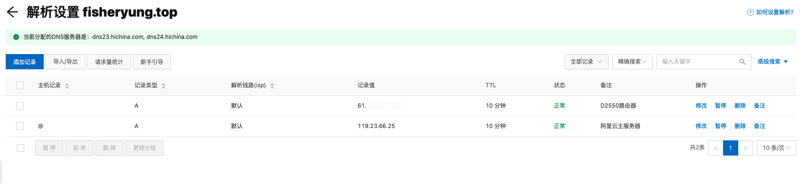
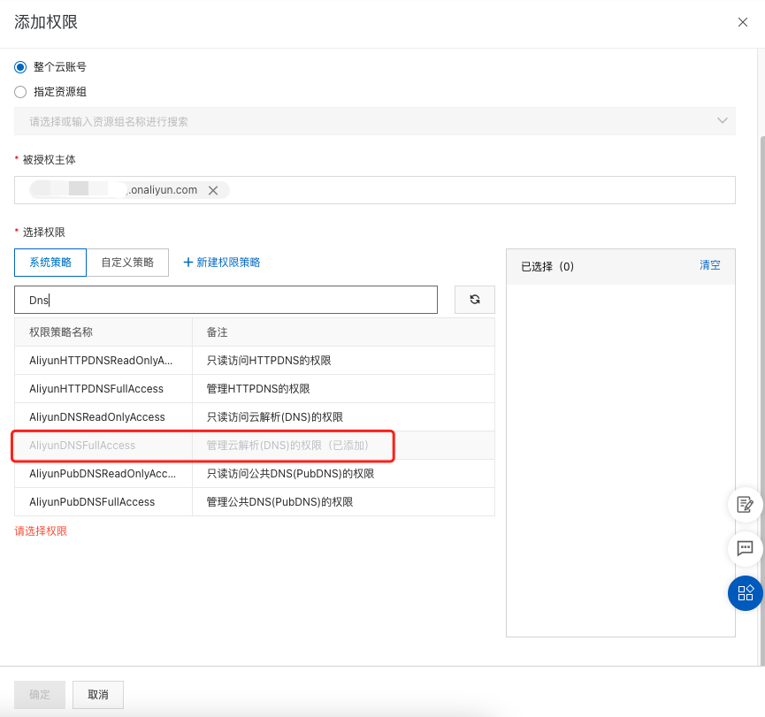
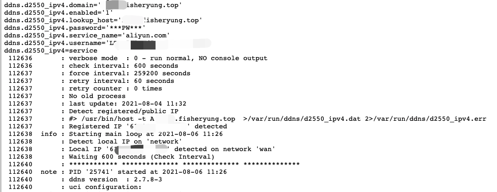
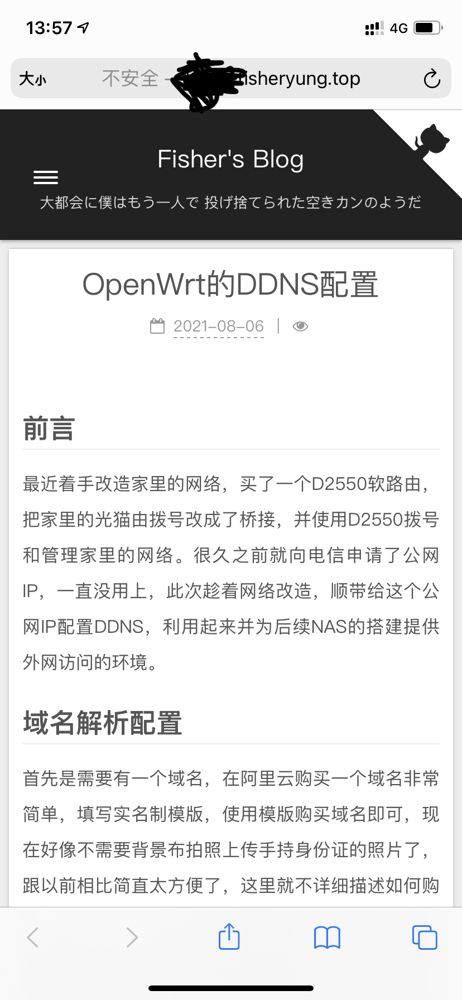

前言
最近着手改造家里的网络，买了一个D2550软路由，把家里的光猫由拨号改成了桥接，并使用D2550拨号和管理家里的网络。很久之前就向电信申请了公网IP，一直没用上，此次趁着网络改造，顺带给这个公网IP配置DDNS，利用起来并为后续NAS的搭建提供外网访问的环境。
域名解析配置
首先是需要有一个域名，在阿里云购买一个域名非常简单，填写实名制模版，使用模版购买域名即可，现在好像不需要背景布拍照上传手持身份证的照片了，跟以前相比简直太方便了，这里就不详细描述如何购买域名和实名制认证了。
打开阿里云的云解析DNS，点击需要修改解析设置的域名，点击添加记录，每项的配置如下：
- 记录类型：
A（如果需要解析IPv6地址就选择AAAA） - 主机记录：
myhome（修改为自己想要的三级域名，留空则不使用三级域名） - 解析线路：
默认（一般默认即可） - 记录值：
xx.xxx.xx.xx（填入D2550的wan口IP地址） - TTL：
10分钟（一般默认即可）
点击添加后，看到页面记录显示解析状态正常，域名解析配置就完成了。

访问控制配置
接下来需要配置的是云解析DNS的访问控制，配置访问控制的目的是让D2550获得更改解析记录的权限。
打开阿里云的访问控制/RAM访问控制，打开身份管理中的用户，点击创建用户，登录名称和显示名称自定，勾选Open API调用访问。
创建用户后，阿里云会提供该用户的AccessKey ID和AccessKey Secret，将其记录下来，页面关闭后就不再显示Secret了。点击用户操作选项中的添加权限，在系统策略中找到管理云解析DNS的权限，选择添加并确定。

这一步完成后，云端的配置工作就完成了。
路由器配置
打开D2550的管理界面，打开动态DNS服务页面，添加一份配置，配置如下：
- 启用：☑️
- 查询主机名：
myhome.fisheryung.top（填入在域名解析配置中设置的域名） - IP地址版本：
IPv4地址（如果用IPv6则改成v6地址） - DDNS服务提供商：
aliyun.com - 域名：
myhome.fisheryung.top（同查询主机名） - 用户名：
AccessKey ID（访问控制配置中提供的ID） - 密码：
AccessKey Secret（访问控制配置中提供的Secret）
保存并应用，过一段时间查看日志，如果有定时检查并更新IP地址，则表示配置成功。

测试
给D2550配置端口转发，在本地启动Hexo博客，用手机流量尝试进行访问，可以看到访问成功，自此DDNS配置完成。
